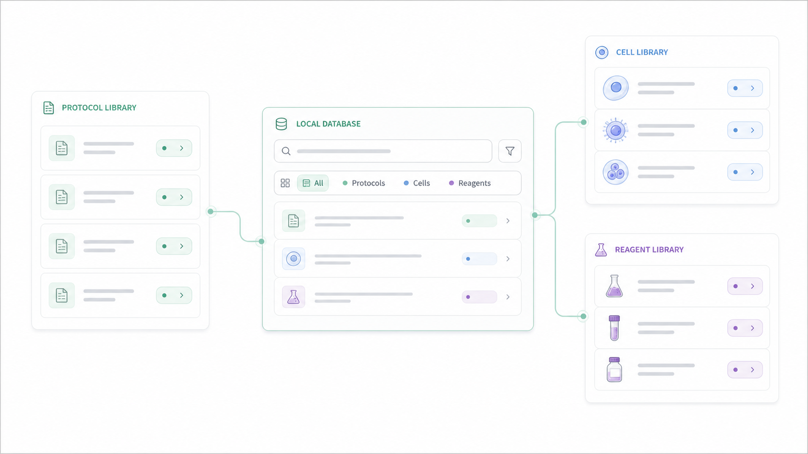
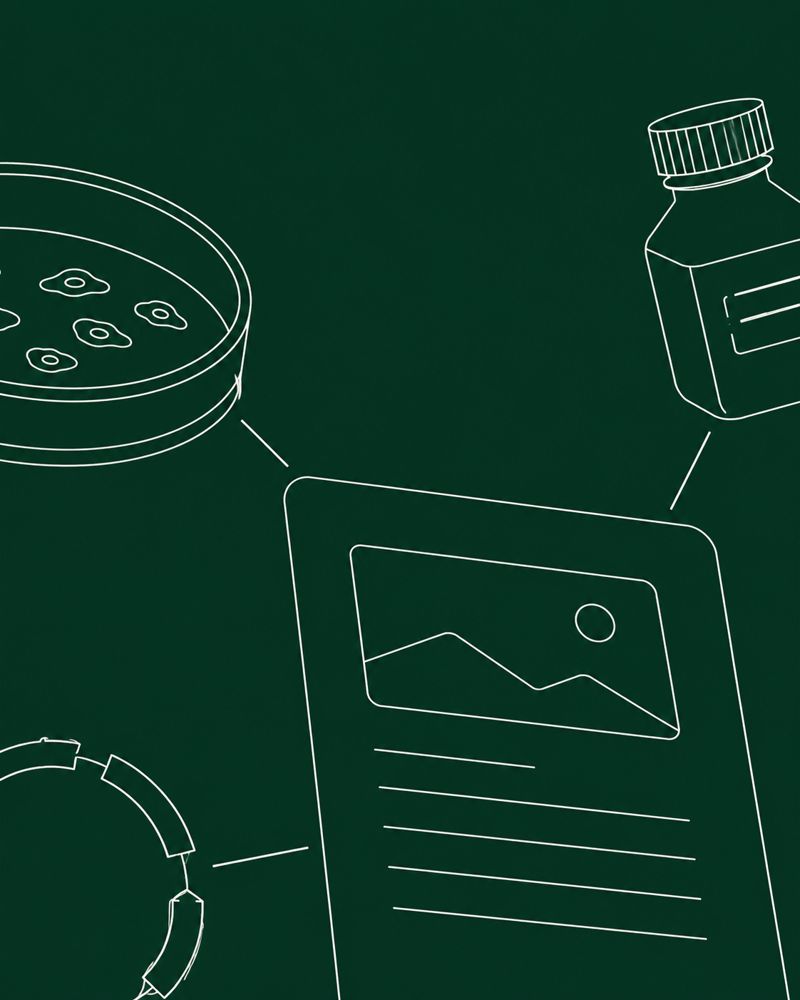
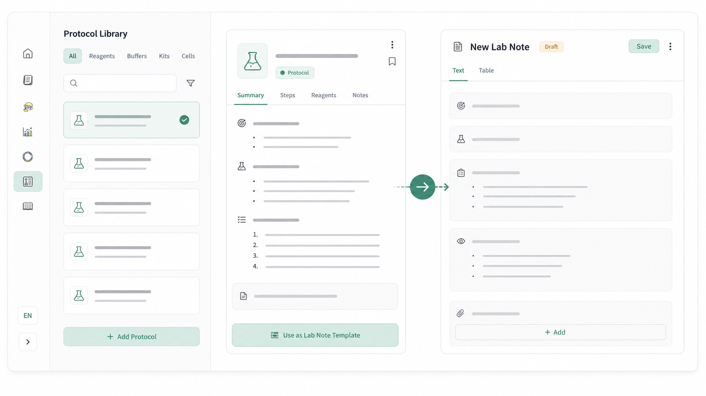
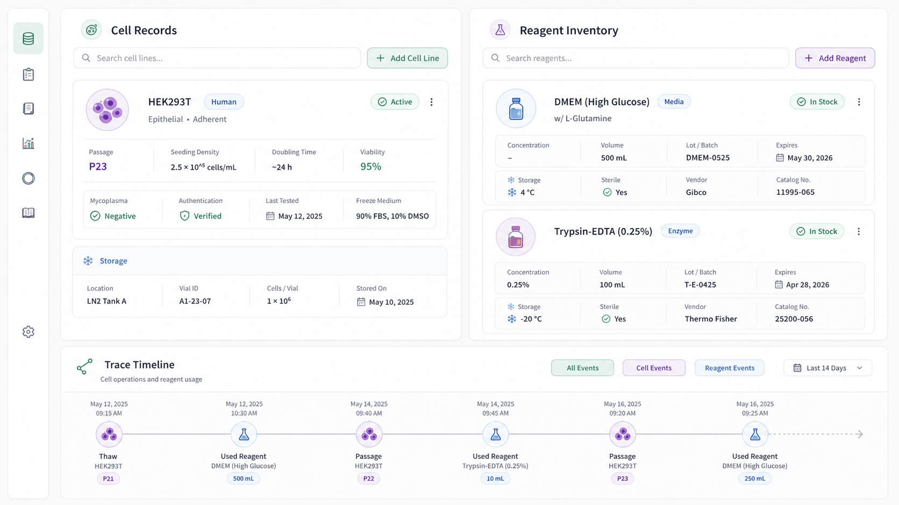

EXPERIMENT / 02414 AUG 2024
AGO2 silencing assay
Compare knockdown efficiency across the let-7b pathway.
Resources资源リソース
Cells, reagents, plasmids, protocols — connected to the experiments that use them.细胞、试剂、质粒、Protocol，都与使用它们的实验相连。細胞、試薬、プラスミド、Protocol を、使った実験とつなげます。

The experiment creates connections实验创造连接実験がつながりを生む
Compare knockdown efficiency across the let-7b pathway.

01 — LINK RESOURCES
02 — REUSE NOTES & PROTOCOLS复用笔记与 Protocolノートと Protocol を再利用

03 — TRACE RESOURCES追踪资源リソースを追跡

The record behind the record记录背后的记录記録の、その先へ
Cell culture / TM3
Experiment 021 · Cell maintenancepCMV-AGO2 · let-7b
Experiment 024 · AGO2 silencing assayTRIzol protocol · TM3
Experiment 024 · Sample preparationReadout / let-7b pathway
Experiment 024 · ResultsFrom public to personal从公共资源到个人工作公開情報から、自分の仕事へ

Pasero / ResourcesPasero / 资源Pasero / リソース